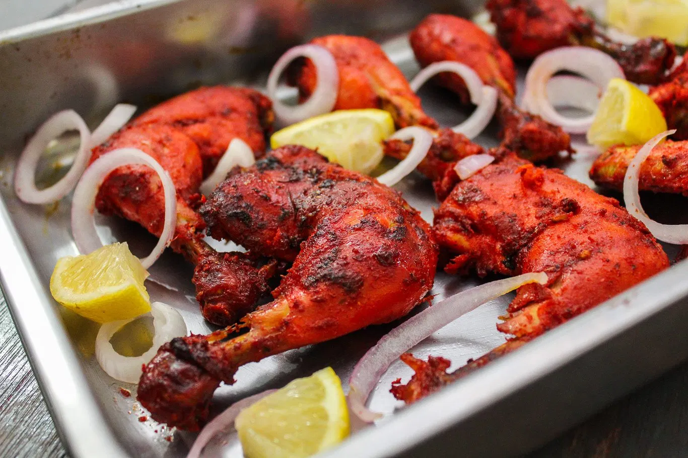

Tandoori Chicken

Description
The key to tandoori chicken is to use bone-in thighs and legs (yay! our favorite cuts) because they have enough
fat to stay moist under the heat of the grill. We don't recommend this dish with chicken breasts, they'll dry
out too easily.
The pieces should be skinless. Here's a trick though, if you find yourself with extra skins (we bought our
pieces skin-on), soak them in the marinade and slowly fry them until crispy. Better than bacon.
Ingredients
- 2 pounds chicken, cut into pieces
- 1 teaspoon salt
- 1 lemon, juiced
- 1¼ cups plain yogurt
- ½ onion, finely chopped
- 1 clove garlic, minced
- 1 teaspoon grated fresh ginger root
- 2 teaspoons garam masala
- 1 teaspoon cayenne pepper
- 1 teaspoon yellow food coloring
- 1 teaspoon red food coloring
- 2 teaspoons finely chopped cilantro
- 1 lemon, cut into wedges
Steps
-
Remove skin from chicken pieces, and cut slits into them lengthwise.
Place in a shallow dish. Sprinkle both sides of chicken with salt and
lemon juice. Set aside 20 minutes.
-
Remove skin from chicken pieces, and cut slits into them lengthwise.
Place in a shallow dish. Sprinkle both sides of chicken with salt and
lemon juice. Set aside 20 minutes.
- Preheat an outdoor grill for medium high heat, and lightly oil grate.
-
Cook chicken on grill until no longer pink and juices run clear.
Garnish with cilantro and lemon wedges.
Cook's Note:
This dish can also be baked in a hot oven (450 degrees F) for 25 to 30 minutes,
or until chicken is done.
go back to home page